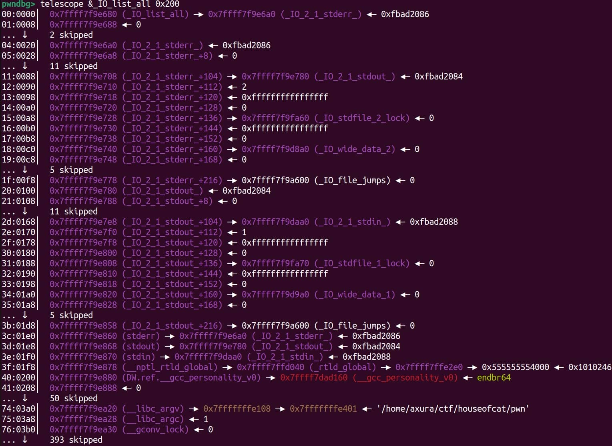

House of Kiwi
0xff 背景
目前高版本glibc中，由于hook的移除，
house of kiwi已经不再适用
在glibc-2.24-0ubuntu3_amd64及之前的版本中，我们可以修改vatable为任意地址，以便于轻松控制其中的函数指针
但是在glibc-2.24-0ubuntu3_amd64之后会有对vtable的安全检查，将其限制在__libc_IO_vatables中，导致无法实现任意改写
如下：
static inline const struct _IO_jump_t *
IO_validate_vtable (const struct _IO_jump_t *vtable)
{
/* 快速路径：检查 vtable 指针是否位于 __libc_IO_vtables 段内。*/
uintptr_t section_length = __stop___libc_IO_vtables - __start___libc_IO_vtables;
uintptr_t ptr = (uintptr_t) vtable;
uintptr_t offset = ptr - (uintptr_t) __start___libc_IO_vtables;
if (__glibc_unlikely (offset >= section_length))
/* 如果 vtable 指针不在预期的段内，就走慢路径。 慢路径会在必要时终止进程。*/
_IO_vtable_check ();
return vtable;
}
/* 只有当 vtable 指针位于 __io_vtables 段内时，才算“合法”，否则进入慢路径进一步检查或 abort() */
void _IO_vtable_check(void)
{
/* Shared glibc 中，如果 accept flag 被设置为 __IO_vtable_check 本身，则跳过 */
if (flag == &_IO_vtable_check) return;
/* 或者跨 namespace 使用动态加载，也可能绕过 */
if (within dlopen context) return;
__libc_fatal("Fatal error: glibc detected an invalid stdio handle\n");
}
自此，我们再也无法轻易通过写入/伪造vtable来劫持程序执行流。
于是house of kiwi通过劫持vtable指向的全局_IO_file_jumps_表来实现执行流的劫持。不过某些特定版本的glibc中_IO_file_jumps_不可写，可能出现问题
0x00 攻击条件
-
能够触发
__malloc_assert，通常是修改top chunk大小/清空prev_inuse位 -
可以覆盖
stderr指针，使其指向我们可以控制的内存区域
0x01 原理
FSOP
FSOP和本攻击无关，只是为了引出接下来的内容，详细可以看@r3t2的这篇博客
FSOP全称为File Stream Oriented Programming，即利用函数触发IO操作，主要是这样的攻击方式：
- 在堆上伪造一个
_IO_FILE_plus结构，里面的vtable指向攻击者布置的 fake vtable（也在堆或可写内存） - 然后修改全局链表指针
_IO_list_all，让它指向伪造的FILE - 再然后，程序退出时
exit()→_IO_flush_all_lockp()遍历FILE→ 调用 fake vtable → 跳到system("/bin/sh")。
例如，exit激活链顺序如下：
exit
└───►fcloseall
└───►_IO_cleanup
└───►_IO_flush_all_lockp
└───►_IO_OVERFLOW
利用原理如下：
-
在
exit()时，glibc 会遍历全局链表_IO_list_all里挂的所有FILE结构。 -
对每个
FILE，会根据其 vtable 调用虚函数，比如_IO_OVERFLOW。 -
如果攻击者能控制一个 伪造的
_IO_FILE_plus结构，就能在这个链条最后一步把控制流劫持到自己想要的函数。
但有很多情况会导致此方法失效
- 当题目使用系统调用的退出——
_exit来结束程序的时候，我们没有机会去调用_IO_cleanup之前的基本函数 - 题目根本不退出，直接
while(1)循环 - 二进制文件中没有明显的**IO**操作
那么此时，我们该怎么办呢
__malloc_assert
在malloc.c中始终存在这样一个函数，大家在程序出错的时候可能见过：
// malloc.c ( #include <assert.h> )
# define __assert_fail(assertion, file, line, function) \
__malloc_assert(assertion, file, line, function)
static void __malloc_assert (const char *assertion, const char *file, unsigned int line, const char *function)
{
(void) __fxprintf (NULL, "%s%s%s:%u: %s%sAssertion `%s' failed.\n",
__progname, __progname[0] ? ": " : "",
file, line,
function ? function : "", function ? ": " : "",
assertion);
fflush (stderr);
abort ();
}
该函数调用了fflush并接受了IO结构体stderr作为参数。我们知道stderr有如下性质
- 一个标准
file结构体 - 与
_IO_FILE有着相同的结构体结构 - 指向
_IO_2_1_stderr_——位于_IO_list_all指向的链表的顶部

当函数进入这个结构体后，会通过其虚函数表指针（_IO_file_jumps）调用 _IO_file_sync（偏移量 +0x60）。在特定运行环境下，如果触发了相应错误条件，对 malloc 系列函数（如 malloc、calloc、realloc）的调用将会进入 _int_malloc 的处理流程，如下：
_int_malloc
└───►sysmalloc
└───► __malloc_assert
└───► fflush(stderr)
└───► _IO_file_sync (_IO_new_file_sync)
此时寄存器
rdx的值将始终为_IO_helper_jumps。并且
setcontext是通过rdx寄存器来传递数值的... 0x77d08a450c0d <setcontext+61> mov rsp, qword ptr [rdx + 0xa0] 0x77d08a450c14 <setcontext+68> mov rbx, qword ptr [rdx + 0x80] 0x77d08a450c1b <setcontext+75> mov rbp, qword ptr [rdx + 0x78] 0x77d08a450c1f <setcontext+79> mov r12, qword ptr [rdx + 0x48] 0x77d08a450c23 <setcontext+83> mov r13, qword ptr [rdx + 0x50] 0x77d08a450c27 <setcontext+87> mov r14, qword ptr [rdx + 0x58] 0x77d08a450c2b <setcontext+91> mov r15, qword ptr [rdx + 0x60] 0x77d08a450c2f <setcontext+95> test dword ptr fs:[0x48], 2 0x77d08a450c3b <setcontext+107> je setcontext+294 <setcontext+294> ...
此外，IO_file_sync函数是一个全局跳转表，有**写**的权限，可以任意地址写来劫持
当__malloc_assert打印报错信息的时候，会走另一条调用链：
_int_malloc
└───► sysmalloc
└───► __malloc_assert
└───► __fxprintf
└───► __vfxprintf
└───► __vfxprintf_internal
└───► _IO_file_xsputn
这条链比前一条链更早触发，因此我们想攻击setcontext的时候需要合理安排sigreturnFrame数据为合法指针
总而言之，当我们可以控制stderr的文件结构时，我们就可以劫持执行流
0x02 攻击手段
触发__malloc_assert
在_int_malloc中，存在assert宏检查，如下：
for (bin = bin_at(av, idx); (victim = last(bin)) != bin; ) {
bck = victim->bk;
assert(chunk_main_arena(bck->bk)); // 断言
unlink(victim, bck, fwd);
}
或者通过修改top chunk使得其不合法，从而在sysmalloc中触发assert：
assert ((old_top == initial_top (av) && old_size == 0) ||
((unsigned long) (old_size) >= MINSIZE &&
prev_inuse (old_top) &&
((unsigned long) old_end & (pagesize - 1)) == 0));
这个触发比较好实现，如下任意条件满足即可：
- top chunk大小<0x20
- top chunk的
prev_inuse为0 old_top未按照页对齐
攻击
如果可以存在任意写，通过修改IO_file_jumps+0x60的_IO_file_sync指针为setcontext+61；修改IO_helper_jumps+0xA0和IO_helper_jumps+0xA8分别为可以迁移的存放有ROP的位置和ret指令的gadget位置，则可以进行栈迁移
执行链
fflush(stderr)→ 调用伪造 vtable → 跳转到setcontext+61。setcontext+61会根据[rdx+0xa0]等位置布置寄存器，完成栈迁移。- 进入我们准备好的 ROP chain（如 ORW 链，最终读取 flag）。
0x03 PoC & 总结
这个house过于古老了，就不贴PoC了。
House of Kiwi借助 __malloc_assert 中的 fflush(stderr) 强行进入 FSOP 链，通过伪造 IO 结构和 setcontext+61 实现栈迁移与 ROP，绕过传统 exit/IO 限制。
在 glibc 2.34 新版安全检查后，该手法被废，但其思路延伸到后续的 House of Emma。
参考文章
- https://www.anquanke.com/post/id/235598
- https://4xura.com/binex/heap/house-of-kiwi/
- https://blog.csdn.net/Mr_Fmnwon/article/details/145956398